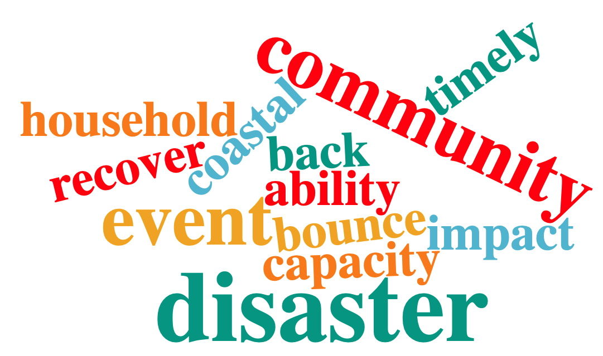

Write Up
1 Abstract
1.1 Keywords
Resilience Measurement, Meta Review, Natural Language Processing
2 Introduction
3 Methods
3.1 Scoping Scopus (Literature Search)
The literature search started with an experimental search in March 2023. The aim of the experimental search of literature is to scout the volume and diversity of the available literature. It was evident from this experiment that there exists a colossal amount of reviews on resilience and not all reviews are equal. This experiment was helpful in further determining the exclusion and inclusion criteria and optimizing the search query as well as the steps for screening review articles.
The Scopus search for literature was conducted on the 3rd of April 2023. There are no publication date limitations, which means that any publication published on or before 3rd of April 2023 are accepted. The review process was assisted by using Rayyan. The schematic, adapted PRISMA representation is shown in the following figure.

The main keywords used in the query for searching on the Scopus database in titles, abstracts, and keywords were “soci*”, “commun*”, “neighbour*”, “urban”, “econom*”, “financi*”, “infrastruct*”, “disast*”, “climate” and “resilience”. This search query is further restricted by excluding the following keywords in the title-abstract-key: “covid”, “corona”, “COVID-19”, “agri*”, “supply chain”, “agro*”, “land”, “education”, “migration”, “sport”, “war”, “coral”, “farm*” and restricted again with the following keywords in the title: “politics”, “policy”, “ecosystem”, “forest”, “worker”, “governance”, “river”, “ecolo*”, “biodiversity”, “institution*”, since it is out of scope for the paper. The document type is set to reveal review journal articles only. Obvious subject areas such as medicine, agricultural and biological sciences, psychology, biochemistry, genetics and molecular biology, computer science, neuroscience, nursing, immunology and microbiology, chemical engineering, health professions, physics and astronomy, chemistry, pharmacology, toxicology, pharmaceutics, veterinary, dentistry, arts and humanities, business, management and accounting, mathematics, and materials science are all excluded. The language of the review articles is limited to English only. Finally, the search query specifies the following keywords that should appear for inclusion: resilience, climate change,, disasters, and disaster. This search query1 resulted in 446 articles in total.
The inclusion and exclusion criteria of review articles are listed in the table below.
| Inclusion Criteria | Exclusion Criteria |
|---|---|
|
|
Learning from the experimental search exercise, it was difficult to determine if an article was truly a review article or not by simply scanning from the title, abstract and keywords. It was interesting to point out that even though the filter for review articles was switched on, there were still a myriad of articles that were not review articles to begin with. To further simplify the process, an additional line2 in the search query was appended, where it only includes articles that mentions “review”, “overview”, or “survey” in either title, abstract, or keyword. This additional exclusion resulted in 341 articles awaiting to be screened.
Following the screening of 341 articles, 256 articles were removed due to not being in scope with this paper. The main reasons for removing the articles was that the articles focused on sustainability, nature (such as forests or lakes), governance, health, particular species (such as beetles or plants), technology, etc. Furthering the screening and filtering of articles, 85 reviews were under full-text screening. The purpose of full-text screening is to ensure that all inclusion and exclusion criteria are met. A substantial portion of the articles were removed either due to not being a systematic review or simply not being a review article.
After the full-text screening, the remaining 21 articles were controlled using the Methodological Quality Checklist <insert citation here, Bird article>. The checklist consists of 7 questions, and for each question, if the review satisfy the requirement or question, the review receives 1 point, which results in 7 full possible points. The checklist is slightly adapted for question 1, where if there is a clear aim or purpose for the review, then the review itself would satisfy the question. Following the example of Bird (2018), this meta review would include any review that received four or more points, as those were “deemed moderate-to-high quality” (Bird, 2018). Although the checklist may appear simple, but it was a rather effective astringent in determining the quality of the review articles. All except one review satisfy question 5 of the checklist, which asked if the primary studies have been quality assessed. The other question where only 2 reviews satisfied, was about if each stage of the review process have been involved by at least two authors. Finally, this umbrella review proceeds with analysis and synthesis with 11 systematic reviews. The table below lists the final 11 reviews synthesized in this paper.
| ID | Article Name | DOI | Author Names | Keywords | Category | Year of Publication |
| 1 | Coastal community resilience frameworks for disaster risk management | https://doi.org/10.1007/s11069-020-03875-3 | A. Almutairi, M. Mourshed, R.F.M. Ameen | Coastal communities · Resilience indicators · Assessment framework · Coastal hazards · Disaster risk management | Community | 2020 |
| 2 | Critical review of urban community resilience indicators | https://doi.org/10.1108/SASBE-08-2022-0180 | Robert Osei-Kyei, Vivian Tam, Ursa Komac, Godslove Ampratwum | Urban community, resilience, criteria, indicators, disasters | Community | 2023 |
| 3 | Improving the resilience of critical infrastructures: Evidence-based insights from a systematic literature review | https://doi.org/10.1016/j.ijdrr.2022.103123 | Bawantha Rathnayaka, Chandana Siriwardana, Dilan Robert, Dilanthi Amaratunga, Sujeeva Setunge | Disaster risk reduction, Resilience, Disasters, Critical infrastructure, Criticality assessment, Damage reduction, Sendai framework | Infrastructure | 2022 |
| 4 | Indicators to assess organizational resilience – a review of empirical literature | 10.1108/IJDRBE-11-2018-0046 | Khalil Rahi | Resilience, organizational resilience, indicators, empirical studies, awareness, adapative capactiy | Organizational | 2019 |
| 5 | Infrastructure resilience curves: Performance measures and summary metrics | https://doi.org/10.1016/j.ress.2021.107926 | Craig Poulin , Michael B. Kane | Resilience, Critical infrastructure, Metrics, Performance measures. System analysis | Infrastructure | 2021 |
| 6 | Mapping urban resilience to disasters – A review | https://doi.org/10.1016/j.scs.2019.101746 | Jean-Marie Cariolet, Marc Vuillet, Youssef Diab | Urban resilience, Map, GIS, resilience indicators | Urban | 2019 |
| 7 | Resilience of critical infrastructure to natural hazards: A review focused on drinking water systems | https://doi.org/10.1016/j.ijdrr.2020.101575 | Gabriela Quitana, María Molinos-Senante, Alondra Chamorro | Resilience, Critical infrastructure, Drinking water, Natural hazard, Literature review | Infrastructure | 2020 |
| 8 | Resilience of urban transportation systems. Concept, characteristics, and methods. | https://doi.org/10.1016/j.jtrangeo.2020.102727 | L.A.P.J. Gonçalves, P.J.G. Ribeiro | Resilience, Transportation system, Urban networks, Urban transportation modes | Infrastructure | 2020 |
| 9 | Resilience theory incorporated into urban wastewater systems management. State of the art | http://dx.doi.org/10.1016/j.watres.2017.02.047 | P. Juan-García, D. Butler, J. Comas, G. Darch, C. Sweetapple, A. Thornton, Ll Corominas | Management, Resilience, Sewer systems, Wastewater, WRRF | Infrastructure | 2017 |
| 10 | Resilient cities critical infrastructure interdependence: a meta-research | https://doi.org/10.1080/23789689.2020.1795571 | May Haggag, Mohamed Ezzeldin, Wael El-Dakhakhni, Elkafi Hassini | Cities; complex systems; meta-research; resilience; topic modelling | Infrastructure | 2020 |
| 11 | Systematic review of critical infrastructure resilience indicators | 10.1108/CI-03-2021-0047 | Robert Osei-Kyei, Laura Melo Almeida, Godslove Ampratwum, Vivian Tam | Critical infrastructure, Resilience, Standards, Criteria | Infrastructure | 2022 |
Upon closer inspection, it was revealed that there weren’t any systematic reviews in the category of economic resilience. This points towards a clear avenue of future research.
3.2 Guiding Questions
The synthesis and analysis of the 11 review articles are guided by the following two questions:
How is resilience defined and manifested as indicators in the different resilience streams?
What are the commonalities between these different resilience streams in definition and indicators?
4 Results
4.1 Bibliometric Reporting
Of the 11 articles examined in this article, 7 papers could be classified as related to measuring the resilience of infrastructures, 2 papers concerns community resilience, 1 paper on organizational resilience, and another paper on urban resilience. The years of publication of the included articles spans from 2017 to 2023. This is unsurprising as systematic reviews were originally from the field of health and only started diversifying in the early 2000s Systematic reviews: A brief historical overview. The total number of articles that were included in the 11 papers is 829 articles, with an average of 75.4 articles and standard deviation of 74 articles. Furthermore, the paper with the least amount of articles is coastal community paper, with 9 articles reviewed and the paper with the highest amount of articles is infrastructure resilience curves with 273 papers. The median of articles included for review across all papers is 50.
The average number of authors across the 11 review articles is 3.5, with a standard deviation of 1.6. The highest amount of authorship in a paper is 7 Resilience theory article, and the least amount of authors in a review paper is 1 Indicators to assess article. Out of the 11 articles included in this article, 6 were published by Elsevier, 3 by Emerald, 1 by Springer and another 1 by Taylor & Francis. The 11 articles also demonstrated the use of different database in their literature search, with an average of 1.6 databases consulted. Scopus was the most popular database, with 7 uses, which follows closely with Web of Science with 6 uses. The other databases consulted were Google Scholar (2 instances), ScienceDirect (2 instances), and IEEE Xplore (1 instance).
4.2 Resilience Definitions
The various definitions are scraped from each review paper. Some papers try to synthesize the definition of resilience put some example papers here and their citation\, and some papers will propose their own definition of resilience example papers here, while a paper (Cariolet) will simply use a widely cited definition. This particular sub-section aims to explore the conceptualization of social and infrastructure resilience through the various definitions mentioned using word clouds and term frequency (and maybe more?)

Infrastructure Resilience Definitions


Community Resilience Definitions

Organizational Resilience Definitions
5 Appendix
5.1 Resilience Definition Tables
The following table lists all of the definitions mentioned in the article collected by the respective authors. The definition in bold symbolizes that either the author(s) has generated that definition or the author(s) has simply quoted a well-known definition as its working definition for their review.
| Article Name | Definition |
|---|---|
| Improving the resilience of critical infrastructures: Evidence-based insights from a systematic literature review | “… ability of a system,community or society exposed to hazards to resist, absorb, accommodate, adapt to, transform and recover from the effects of a hazard in a timely and efficient manner, including through the preservation and restoration of its essential basic structures and functions through risk management…” |
| Infrastructure resilience curves: Performance measures and summary metrics | “… a system’s ability to withstand, respond to, and recover from disruptions.” |
| Resilience of critical infrastructure to natural hazards: A review focused on drinking water systems | “The engineering resilience involves concepts about efficiency, steadiness and predictability, focusing on the functional stability of a system close to a single equilibrium steady state and how fast that system returns to this state after a disturbance occurs.” “… ecological resilience includes concepts of persistency, change and unpredictability, associating conditions far from any equilibrium steady state, where disturbances can take the system to a”new stability”, that is, the focus is on the instability and the tendency to develop into a new state…“ “… is the capacity of a social-ecological system to absorb or withstand perturbations and other stressors such that the system remains within the same regime, essentially maintaining its structure and functions. It describes the degree to which the system is capable of self-organization, learning and adaptation…” “… resilience as a function of the node-link connectivity (understanding node as points of demand and reservoirs), the failure probability of the pipelines and the demand of the nodes…” “… is the ability to reduce the magnitude and/or duration of disruptive events. The effectiveness of a resilient infrastructure depends upon its ability to anticipate, absorb, adapt to, and/or rapidly recover from a potentially disruptive event…” “The capacity of a system, community or society potentially exposed to hazards to adapt, by resisting or changing in order to reach and maintain an acceptable level of functioning and structure. This is determined by the degree to which the social system is capable of organizing itself to increase its capacity for learning from past disasters for better future protection and to improve risk reduction measures.” |
| Resilience of urban transportation systems. Concept, characteristics, and methods | “… the ability of a system to resist, reduce and absorb the impacts of a disturbance (shock, interruption, or disaster), maintaining an acceptable level of service (static resilience), and restoring the regular and balanced operation within a reasonable period of time and cost (dynamic resilience).” “The concept of resilience was firstly introduced in a study on ecological systems by Holling, defining the ability of these systems to absorb and maintain changes in environmental variables.” “Resilience is a characteristic that indicates system performance under unusual conditions, recovery speed, and the amount of outside assistance required for restoration to its original functional state.” “Resilience is defined as the ability of the system to absorb the consequences of disruptions to reduce the impacts of disruptions and maintain freight mobility.” “…defined as the adaptive capability of the supply chain to prepare for unexpected events, respond to disruptions, and recover from them by maintaining continuity of operations at desired levels of connectedness and control over structure and function.” “The definition of resiliency ... is the ability for a transportation network to absorb disruptive events gracefully and return itself to a level of service equal to or greater than the pre-disruption level of service within a reasonable time frame.” “Resilience deals with the response of the system in the face of shock and its ability to continue to provide the expected service delivery levels.” “Resilient transportation systems enable quick evacuation, rescue, distribution of relief supplies, and other activities for reducing the impact of natural disasters and for accelerating the recovery from them.” “It appears that resilience, conceived of as the capacity/ability of the system to absorb shocks without catastrophic changes in its basic functional organisation, is a potentially effective tool in understanding the evolutionary paths of complex spatial networks, such as transport and communication networks.” “Resilience of a system refers to the ability to withstand disruptions within acceptable reduction in-service performance.” “Resilience is the speed at which a system returns to equilibrium after a disturbance away from equilibrium.” “The concept of resilience is intended to capture a system’s capacity to maintain its function after a major disruption or disaster.” “… have defined resilience as the ability of transportation systems to experience a potentially damaging event and return to a healthy state of operations in a reasonable period of time after that event.” “… refer transportation resilience as the ability of a transportation system to absorb disturbances, maintain its basic structure and function, and recover to a required level of service within an acceptable time and costs after being affected by disruptions.” “… is the ability to maintain the operation of a system, while the economic counterpart is utilizing remaining resources as efficiently as possible in order to maintain the function performance of the system. This reflects the core of the economic problem based on how to best use scarce resources…” “… refers to the ability and speed of recovery, where the economic counterpart pertains to investing wisely in repair and reconstruction. This is a dynamic consideration from the standpoint of economics because it involves a time trade-off diverting resources for investment represents setting aside current consumption to enhance productivity at future times.” |
| Resilience theory incorporated into urban wastewater systems management. State of the art | “The ability to prepare and plan for, absorb, recover from, and more successfully adapt to adverse events.” “Resilience was understood as the capacity of an ecosystem to survive, adapt, and grow in the face of unforseen changes. A resilient ecoystem can stay within the stable state when facing a stressor, or can adapt and enter a new stable state - i.e. change the structure while maintaining its functionality - which guarantees its existence.” “The capacity of a system to absorb disturbance and re-organize while undergoing change so as to still retain essentially the same function, structure, identity and feedbacks.” “Resilience is the ability to gracefully degrade and subsequently recover from a potentially catastrophic disturbance that is internal or external in origin.” “Degree to which the system minimises level of service failure magnitude and duration over its design life when subject to exceptional conditions.” ~ Appeared three times. “Reduced failure probabilities, reduced consequences, reduced time to recover.” “Degree to which the asset base can perform and maintain its desired function under both, routine and unexpected circumstances.” “Degree to which the process can handle short-term stressors that affect the dynamics of the process.” “Resilience is a function of the system functionality loss and the failure event duration.” “Speed with which the reactor recovers following a perturbation.” “Ability of the UDS system to minimize the magnitude and duration of flooding resulting from extreme rainfall events.” “Ability to maintain its basic structure and patterns of behaviour through absorbing shocks or stressors under dynamic conditions.” “Ability to recover from or to resist being affected by external shocks, impacts or stressors.” “Ability to prepare for and adapt to changing conditions and withstand and recover rapidly from disruptions.” “Ability to recover from process upsets.” “The ability to prepare for and adapt to changing conditions and withstand and recover rapidly from disruptions.” “To adapt our city to the impacts of climate change and to seek to ensure that, when nature overwhelms our defenses from time to time, we are able to recover more quickly.” “Resilience is the ability to recover from disruption.” “Resilience is the ability to cope with, and recover from, disruption, and anticipate trends and variability in order to maintain services for people and protect the natural environment now and in the future.” ~ Appeared twice. “Resilience is the ability of assets, networks and systems to anticipate, absorb, adapt to and/or rapidly recover from a disruptive event.” ~ Appeared twice. |
| Resilient cities critical infrastructure interdependence: a meta-research | “In applied science, resilience is used to describe the stability of materials under shocks.” “In ecology, resilience indicates how much disturbance an ecosystem can absorb before switching to another state.” “Urban resilience was also advocated for by the Rockefeller Foundation as the capacity of city systems to survive, adapt and grow in spite of ‘chronic stresses or acute shocks’.” “Decisionmakers define resilience as the ability of their organizations / facilities / systems to recover from a certain disruption and return to their original operations.” “In engineering, resilience is the ability of a system to bounce back to a pre-existing or a more desirable state.” |
| Systematic review of critical infrastructure resilience indicators | “Resilience addresses the capability of a system to withstand and recover from a disruptive event. If refers to a system’s ability to absorb a specific shock or threat, and the time it takes to restore balance, which should be as minimum as possible.” |
| Article Name | Category | Definition |
|---|---|---|
| Coastal community resilience frameworks for disaster risk management | Community | “… coastal resilience as the ability for both human and natural communities to resume their normal lives; i.e. ‘bounce back,’ following events such as coastal storms, hurricanes, and flooding, rather than simply reacting to the impact of such events.” |
| Critical review of urban community resilience indicators | Community | “… urban community resilience as the ability of individuals/households/business entities within a geographical boundary to resist or recover timely from the impact of disasters.” “Urban community resilience has been described as equipping people, communities and infrastructure systems to bounce back more quickly from shocks and stresses.” “The capacity of urban communities to recover timely and adapt to recurrent disaster events.” “The capacity of households to protect, absorb and mitigate the effects of disasters.” “Community resilience is a communal perspective in coping with disasters and encompasses ideas like problem-solving, efficiency and adaptability.” |
| Indicators to assess organizational resilience – a review of empirical literature | Organizational | “Organizational resilience describes how well-prepared organizations are to overcome to react to disruptions.” “… organizations are perceived as systems with simple cause and effect dynamics. Moreover they are supposed to return quickly to the functional”acceptable” state (bounce back) from disruptions.” “… organizations tend to adapt (recognition of the adaptive nature of the organization) by changing their structure, processes, culture, etc. to thrive in times of crisis. Developing the organization’s adaptive adaptive capacity helps promote learning and development or responses, ina aimte manner, to cope with disruptions. This capacity is achieved through proliferated interactions between humans and the environmental components of the organization. If facilitates the organization;s transformations by moving to a new state (changes on the structure, processes, etc. of the orgnization) when the current state is no longer viable.” “The ability of an organization to survive and thrive changes and uncertainties.” “The ability of an organization to maintain its operations, adapt, and recover from a disaster.” “The ability of an organization to be aware of disturbances and to cope positively with unexpected events.” “The ability to respond to disruptions and transform challenges into opportunities.” “The ability of an organization to avoid disruptions, and if unsuccessful recover quickly.” “The capability to cope with risk events and enhance rates of change success.” “The ability of an organization to adapt to changes in its environment.” “The organizations’ capacity to adapt and recover when facing disruptions.” “The ability of the organization to cope with change, and adapt its structure to prevent disturbances.” “The ability of an organization to establish a culture of resilience and adapt to recover when facing an incident.” “The ability to be aware and prepared, adapt and recover from undesirable events.” “To adapt and successfully manage disruptive challenges.” “The capability of an organization, to manage emergency events to recover to its original condition.” “The ability of an organization to respond and adapt rapidly to unexpected events.” “The ability to improve organizational awareness and adapt from unexpected events.” “The capacity of family businesses to adapt and recover from structural shocks.” “A firm’s ability to improve its awareness and adapt effectively in response to disruptive surprises.” “The ability of an organization to transform its structure prior to, during, or following disturbances.” “The capacity to adapt to threats and opportunities and avoid disturbances.” “The capacity of an organization to enhance its awareness and its adaptive capacity in a complex environment.” “Organizations’ obligation to adapt its strategies in order to avoid business failure.” “The development of a healthy workforce able to improve its awareness and adapt successfully during disruption periods.” “The ability to improve awareness, to analyze the situation, to adapt and recover from errors to continue operations.” “The capability of an organization to prepare for, and respond to disturbances.” “The ability of an organization to survive and thrive through negative and positive changes.” “The ability of an organization to improve its awareness and adapt in the face of adverse circumstances.” “The ability to adapt and stay competitive in evolving markets.” “The capacity of an organization to stay aware of the changes in its environment and to adapt to changes amidst disruptions.” “The capacity of an organization to improve its awareness and its adaptive capacity in a complex and dynamic environment.” “The managers’ challenge to adapt its strategies and survive the changes in the organization’s environment.” “The capacity of an organization to be aware of irregular variations and disruptions in order to manage the unexpected.” “The capacity of an organization to improve its awareness and its adaptive capacity in a complex and dynamic environment.” “The ability of an organization to identify risks and thrive in the face of adversity.” |
| Mapping urban resilience to disasters – A review | Urban | “Urban resilience refers to the ability of an urban system and all its constituent socio-ecological and socio-technical networks across temporal and spatial sales to maintain or rapidly return to desired functions in the face of a disturbance, to adapt to change, and to quickly transform systems that limit current or future adaptive capacity.” |
Footnotes
( TITLE-ABS-KEY ( “soci” OR ”commun” OR “neighbour” OR ”urban” OR “econom” OR ”financi” OR “infrastruct” OR ”disast” OR “climate” ) AND TITLE-ABS-KEY ( “resilience” ) AND NOT TITLE-ABS-KEY ( “covid” OR “corona” OR “COVID-19” OR “agri” OR ”supply chain” OR ”agro” OR “land” OR “education” OR “migration” OR “sport” OR “war” OR “coral” OR “farm” ) AND NOT TITLE ( ”politics” OR ”policy” OR ”ecosystem” OR ”forest” OR ”worker” OR ”governance” OR ”river” OR ”ecolo” OR “biodiversity” OR “institution*” ) ) AND ( LIMIT-TO ( SRCTYPE , “j” ) ) AND ( LIMIT-TO ( DOCTYPE , “re” ) ) AND ( EXCLUDE ( SUBJAREA , “MEDI” ) OR EXCLUDE ( SUBJAREA , “AGRI” ) OR EXCLUDE ( SUBJAREA , “PSYC” ) OR EXCLUDE ( SUBJAREA , “BIOC” ) OR EXCLUDE ( SUBJAREA , “COMP” ) OR EXCLUDE ( SUBJAREA , “NEUR” ) OR EXCLUDE ( SUBJAREA , “NURS” ) OR EXCLUDE ( SUBJAREA , “IMMU” ) OR EXCLUDE ( SUBJAREA , “CENG” ) OR EXCLUDE ( SUBJAREA , “HEAL” ) OR EXCLUDE ( SUBJAREA , “PHYS” ) OR EXCLUDE ( SUBJAREA , “CHEM” ) OR EXCLUDE ( SUBJAREA , “PHAR” ) OR EXCLUDE ( SUBJAREA , “VETE” ) OR EXCLUDE ( SUBJAREA , “DENT” ) OR EXCLUDE ( SUBJAREA , “ARTS” ) OR EXCLUDE ( SUBJAREA , “BUSI” ) OR EXCLUDE ( SUBJAREA , “MATH” ) OR EXCLUDE ( SUBJAREA , “MATE” ) ) AND ( LIMIT-TO ( LANGUAGE , “English” ) ) AND ( LIMIT-TO ( EXACTKEYWORD , “Resilience” ) OR LIMIT-TO ( EXACTKEYWORD , “Climate Change” ) OR LIMIT-TO ( EXACTKEYWORD , “Disasters” ) OR LIMIT-TO ( EXACTKEYWORD , “Disaster” ) )↩︎
AND TITLE-ABS-KEY ( “review” OR “overview” OR “survey” )↩︎